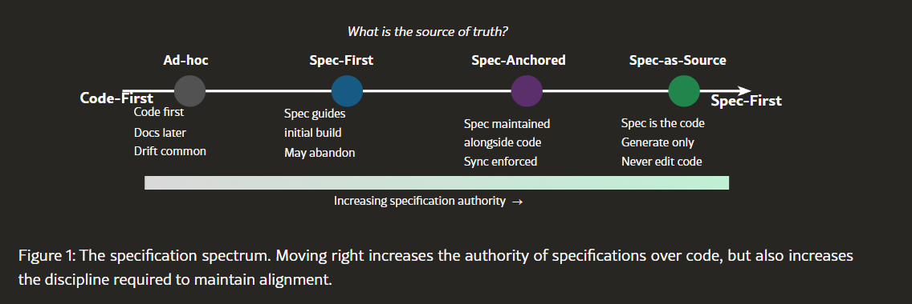
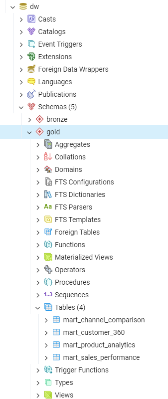

![Screenshot of the PHP monitoring dashboard. Top row shows the latest run status, duration, tables loaded, row count, DQ test pass/fail counts, Silver row totals, Silver anomaly counts, and Gold mart count. A Business KPIs row shows lifetime net sales, Champion customer count, at-risk customer count, and top item revenue. Lower sections list pipeline performance settings (work_mem, max_parallel_workers_per_gather), run history with wall-clock, top 10 slowest dbt nodes, per-table stats for the latest run, Silver and Gold table inventories, and recent DQ test results.](dq.png)
ops schema in Postgres — no external metrics store.A spec-driven build of a TPC-DS warehouse on Postgres — and what it taught a 20-year data veteran about where the role is headed.
I've been in the data space for 20+ years. I've sat in most of the seats you can sit in on the data side of a business — ETL developer, data architect, analytics lead, engineering manager — and I currently hold a leadership role at a Fortune 500 company. That's a long enough runway to have watched a few "next big thing" cycles show up and fade.
Which is exactly why I was skeptical about Spec-Driven Development (SDD). On its face, it looked like another ceremonial-engineering pendulum swing. Haven't we tried this? Didn't we call it waterfall once? Aren't specs the things nobody reads and nobody maintains?
Two resources talked me into actually trying it. The first was Deepak Babu Piskala's arxiv paper Spec-Driven Development: From Code to Contract in the Age of AI Coding Assistants, which argues that with capable agents in the loop the spec stops being documentation-that-rots and becomes the primary artifact — the thing you maintain, with code regenerated from it. The second was the DeepLearning.AI short course on the same topic, which showed the pattern in practice rather than theory.
I wanted to test it on something real. Not a greenfield SaaS toy, not a hello-world web app — a data warehouse. The domain I know best. If SDD works where I'm skeptical, it probably works.
The short version: instead of writing code and then documenting it (and watching the docs drift), you write a specification first — mission, tech stack, roadmap, personas, business rules — and treat that specification as the source of truth. A coding agent, or an engineer, builds from the spec. The spec is what you review, version, and evolve.
There's a spectrum.

Left end: "code-first" — the default for most of us — where the code is truth and docs are an afterthought. As you move right, the spec gains authority: first as a guide, then as something maintained alongside the code, and finally as the source from which code is generated. Most mature teams today live somewhere between "ad-hoc" and "spec-anchored." Full spec-as-source is still rare.
For this project I lived around Spec-First. Four planning docs — mission.md, tech-stack.md, roadmap.md, README.md — drove the initial build and were rich enough that the coding agent could make sensible architectural calls without me hand-holding every decision. I didn't go full spec-as-source because I wanted the freedom to edit code directly when a gotcha came up. And, as you'll see, they came up.
I had an empty project folder on a Windows machine, a running Postgres 17 instance, and four planning documents I'd written in a few minutes:
mart_sales_performance, mart_customer_360, mart_product_analytics, mart_channel_comparison.And I had a data/ folder with twenty-five pipe-delimited .dat files, about 1 GB total — the scale-factor-1 output of the TPC-DS benchmark data generator. The biggest file (store_sales.dat) was 385 MB; the smallest (dbgen_version.dat) was 81 bytes.
No code. No schema. No dbt project. Just planning docs, raw files, and a running Postgres.
I opened Claude Code and typed: "We are creating a data warehouse to ingest, transform and integrate data. The initial set of files are in the data folder."
The first conversation set the foundation. Before writing any code, Claude asked four decision questions that mattered: is Postgres running? Which database name? Python + COPY for ingestion or dbt seed? Will the schema come from the TPC-DS spec or get inferred from the files?
We settled on: Python + COPY (dbt seed chokes on 385 MB files), Bronze stored as all-TEXT columns to preserve source fidelity, and dbt would take over from Silver onward. That architectural decision shaped everything that followed.
The initial scaffold came up fast:
dw/
├── data/ # 25 TPC-DS .dat files
├── ingestion/
│ ├── config.py # .env loader
│ ├── tpcds_schema.py # 25 tables × ~400 columns
│ ├── create_database.py
│ └── load_bronze.py # COPY-based, CSV format, '|' delim
├── transform/ # dbt project
└── dashboard/ # PHP| on every line (it did in older versions). So the first COPY targeted a table with an extra _trailing TEXT column to absorb it. The first load failed with "missing data for column _trailing". A quick xxd showed the file ended with "damaged\n" — no trailing pipe in dbgen 2.10.0. Dropped the column, reloaded, 35 rows landed. This was the one fact I wrote to Claude's persistent memory for future sessions.
After that the full Bronze load ran cleanly: 25 tables, 19,557,336 rows, in about 50 seconds.
Then came observability. Rather than bolting on metrics later, we built an ops schema first:
ops.ingest_runs (run_id, started_at, ended_at, status, ...)
ops.ingest_table_stats (run_id, table_name, rows_loaded, bytes, ...)
ops.dbt_test_results (run_id, test_name, status, failures, ...)Every pipeline invocation now gets a run_id that threads through every step. The PHP dashboard reads straight from these tables — no separate metrics store, no Prometheus, just Postgres.
For scheduling, we wrote a Windows .bat wrapper and a SCHEDULE.md with the exact PowerShell one-liner to register a Task Scheduler job at 5:00 AM. I never let Claude register the scheduled task itself — that kind of system-level action stays with me.
Phase 0 ended with 34 dbt tests on Bronze sources (not-null and unique on every dimension surrogate key), all passing, and a dashboard showing the last run's outcome.
Silver is where raw text becomes typed, cleansed data. And where you decide what to do with the rows that don't cleanly cast.
The pattern we landed on was this: every Silver dim/fact gets two sibling models:
Instead of hand-writing 48 dbt models (24 clean + 24 anomaly) for 25 TPC-DS tables, we put column type rules in Python (ingestion/silver_schema.py) and wrote a generator (scripts/generate_silver_models.py) that emits the SQL. Each model uses a flagged CTE that builds an _anomaly_reasons text[] per row:
with raw as (
select * from {{ source('bronze', 'reason') }}
),
validated as (
select
raw.*,
array_remove(array[
case when r_reason_sk is not null and r_reason_sk !~ '^-?\d+$'
then 'r_reason_sk:not_integer' end
], null) as _anomaly_reasons
from raw
)
select
case when r_reason_sk is null or r_reason_sk ~ '^-?\d+$'
then r_reason_sk::integer end as r_reason_sk,
nullif(trim(r_reason_id), '') as r_reason_id,
nullif(trim(r_reason_desc), '') as r_reason_desc
from validated
where array_length(_anomaly_reasons, 1) is nullThe double-check — regex in the validation CTE and a safe-cast CASE in the outer SELECT — is deliberate. It protects against planners that might push projection before filter and blow up on a row that the filter would have excluded.
Total generated: 48 dbt models, about 4,000 lines of SQL, zero hand-written. On synthetic TPC-DS data, every single row passed validation, which is exactly the non-event you want — but we've proven the anomaly pipe works.
status == "pass" as success. Model builds return status == "success", not "pass" — tests return "pass". Result: run #3 got marked FAILED despite all 130 nodes succeeding, because 48 model builds were being classified as failures. Fixed with a small set of accepted statuses. It taught me to always read the dbt source-of-truth before assuming string values.
The four marts Mrs. BA asked for all needed the three sales channels (store, catalog, web) and three returns tables unified. Rather than UNION-ing them inside each mart, we built two intermediate tables in Silver:
silver.int_sales_unified — 5,041,336 rows with a channel columnsilver.int_returns_unified — 503,344 rowsEach mart then queries the unified view. The four marts came together:
| Mart | Rows | What it gives the BA |
|---|---|---|
mart_sales_performance | 5,476 | Daily (date, channel) rollup; month via GROUP BY |
mart_customer_360 | 100,000 | LTV, RFM score, seven lifecycle segments |
mart_product_analytics | 18,000 | Sales/returns per item + rank + per-channel split |
mart_channel_comparison | 61 | Monthly store-vs-catalog-vs-web (wide format) |
The customer segmentation fell out of ntile(5) over three dimensions — Recency, Frequency, Monetary — and a CASE expression for the label:
case
when r_quintile >= 4 and f_quintile >= 4 and m_quintile >= 4 then 'Champions'
when r_quintile >= 4 and f_quintile >= 3 then 'Loyal'
when r_quintile <= 2 and m_quintile >= 4 then 'At risk high-value'
when r_quintile <= 2 then 'Hibernating'
when f_quintile = 1 then 'New'
else 'Active'
end as segmentOut of 100,000 customers, 18,954 landed in Champions, 29,390 in Hibernating, and 10,208 in At-risk high-value — exactly the kind of cut a marketing team can act on tomorrow morning.
The dashboard got a "Business KPIs" row showing lifetime net sales, Champion count, at-risk count, and top item revenue — numbers the CEO would actually look at.
Phase 3 is where I gave Claude permission to make database-level changes. Baseline had zero indexes and Postgres defaults across the board (work_mem = 4MB, max_parallel_workers_per_gather = 2). The pipeline was taking ~110 seconds end-to-end.
We captured per-node timings from dbt's run_results.json into a new ops.dbt_node_timings table, so the dashboard could surface the slowest models. Top five: fact_store_sales (22s), fact_inventory (21s), int_sales_unified (17s), fact_catalog_sales (15s), fact_inventory__anomalies (11s). All Silver builds dominated by regex validation across millions of rows.
Then we made changes. The successful ones:
ALTER DATABASE dw SET work_mem = '256MB' — EXPLAIN ANALYZE on mart_customer_360 confirmed every hash join now fits in memory (Batches: 1), no disk spills.ALTER DATABASE dw SET max_parallel_workers_per_gather = 4 — gives the planner headroom.ALTER TABLE ... SET (parallel_workers = 4) on the five biggest tables — nudges the planner toward parallel sequential scans.int_sales_unified (customer_sk, item_sk, sold_date_sk), int_returns_unified, and all four Gold marts.Then the two interesting failures.
My hypothesis: the array-allocation in the Silver flagged CTE was wasteful because almost every row has zero anomalies. Swap to a WHERE (col IS NULL OR col ~ regex) AND ... pattern so clean rows never allocate an array at all. Logical, right?
fact_inventory went from 21 seconds to 62 seconds. dim_customer_demographics went from 2 seconds to 17. Postgres apparently optimizes the array-CTE into a single evaluation pass that the AND-filter-plus-cast pattern doesn't match. I reverted; the original pattern was better than my "optimization."
The refactor I was most confident about was the refactor that made things worse. Measure first, measure again after.
This one was my favorite bug of the whole build. I added post_hook configs to each mart:
{{ config(
materialized='table', schema='gold',
post_hook=[
"CREATE UNIQUE INDEX IF NOT EXISTS idx_mart_customer_360_sk ON {{ this }} (c_customer_sk)",
...
]
) }}The dbt logs showed the indexes being created successfully — zero-second duration, clean CREATE INDEX statements targeting the right relations. But when I queried pg_indexes afterward, they weren't there.
The cause: dbt-postgres 1.10's table materialization uses a CREATE-tmp → DROP-final → ALTER-tmp-RENAME-TO-final swap. Something in that swap was dropping the indexes that post-hooks created against {{ this }}. I verified it by manually running CREATE INDEX after the fact — which persisted — then reran the pipeline — and it was gone again.
The fix: stop using dbt post-hooks for indexes. Added a _apply_post_build_tuning() step in ingestion/run_pipeline.py that runs after dbt build completes, with a declarative list of (table, index name, columns, unique) tuples. Idempotent, readable, persistent. This I wrote to Claude's memory so the next engineer won't rediscover it.
After all four phases, here's where the project landed.
The full medallion architecture — Bronze, Silver, and Gold schemas on a single Postgres instance, with paired anomaly tables and BA-facing marts — came out looking like this:

TEXT; Silver casts to proper types with paired __anomalies tables; Gold hosts the four marts the Business Analyst asked for.And the dashboard that Mr. Reliability's persona demanded — the one the Reliability Engineer, the CEO, and the BA can all land on for different reasons:
ops schema in Postgres — no external metrics store.The numbers behind those screenshots:
COPY.Every one of the three personas is covered:
Three things that transferred beyond this specific project:
1. Get observability in before you need it. We built the ops.ingest_runs table in Phase 0, not Phase 3. By the time we were tuning, there were already ten runs of per-node timings to compare against. You can't tune what you haven't instrumented.
2. The "clever" optimization is often wrong. My array-allocation refactor was the kind of thing that looks obviously better in a code review — until you run it. The old pattern used a CTE that Postgres folds efficiently; my new pattern defeated that fold. The regression was 3x.
3. Frameworks have sharp edges. dbt's post-hooks are a documented, supported feature. They run (the logs prove it). And yet, on Postgres, combined with the default materialization, they produced nothing. These gotchas only reveal themselves when you verify the downstream state, not when you read the output.
The experience of building this with an AI pair programmer was different from writing it alone. The AI wasn't guessing — it asked for Postgres credentials, checked file formats before assuming, proposed architectural options with tradeoffs, and pushed back when my refactor was worse than baseline. It also remembered — between sessions — which choices we'd made and why, so I didn't have to re-explain the Bronze/Silver/Gold split or the anomaly-table convention each time.
An empty folder to a running, indexed, tested, dashboarded warehouse in a single afternoon. Four phases. Six surprise bugs. 130 passing nodes. Check the repo if you want to see exactly what that looks like in practice.
When William Stanley Jevons studied coal consumption in 1865, he expected that more efficient steam engines would reduce coal use. Instead, coal consumption exploded — cheaper coal made more applications economical. Aaron Levie applied the same logic to knowledge work: when a cognitive task becomes dramatically cheaper, demand for it does not shrink. It grows, often faster than the efficiency gain.
That is exactly what I saw in this build. Writing 48 dbt models by hand would have been a week of work. With a coding agent and a generator, the whole Silver layer took an afternoon. The natural response is not "I have saved a week" — it is "what is the next warehouse-scale problem I can tackle this afternoon that would have been unthinkable before?" Pipeline tuning I would have deferred. Paired anomaly tables I would have cut from scope. An observability dashboard I would have marked as Phase 2.5 and never built. All of those got done in this single session because the per-task cost dropped to where they were no longer worth skipping.
That is the opportunity. The same dynamic is the threat if you sit still.
I will say this plainly, because I believe it and because it is what I see every day: the role of a data engineer is shifting. The engineers I work with who are experimenting — with SDD, with coding agents, with AI-assisted pipeline reviews, with generated schemas — are shipping multiples more of the right kind of work. They are spending more time on architecture, domain understanding, performance characterization, and hard judgment calls. Less time writing the hundredth hand-crafted COPY script.
The engineers who are waiting it out — who see every AI demo as overhyped, every agent as a parlor trick, every spec-driven pattern as a fad — are still shipping at their pre-2024 pace, against a benchmark that has moved. The gap compounds every sprint. It will not show up as a layoff memo. It will show up as a slow, quiet loss of relevance.
This is not a doomsday signal. There will be more data engineering work, not less — Jevons' Paradox guarantees it. But the work is going to look different, and the engineers doing it are going to look different. Fewer lines of hand-written SQL per week. More decisions about what the pipeline should do, what the specs should say, what the tests should enforce. More leverage per person.
This is a wake-up call to change, not a eulogy. Pick a project you know well. Pick a tool you are skeptical of. Try it. See where you land.
This is the first installment of a longer experiment. The same spec-driven pattern has a lot of runway, and I plan to take it across the warehouses a typical Fortune 500 data org actually lives on:
I will cover both greenfield builds (like this one) and brownfield migrations — where an existing pipeline, legacy spec gaps, undocumented business rules, and twenty years of accreted "this is just how it is" have to be reconciled with a spec-driven approach. Brownfield is where the method gets really tested, and honestly, where it matters most.
If you work in data and any of that sounds useful, follow me here on Medium so the next installment shows up in your feed. If there's a specific warehouse, migration pattern, or business domain you'd like me to try the method on, say so in the comments — I'll work the most-requested ones into the series.